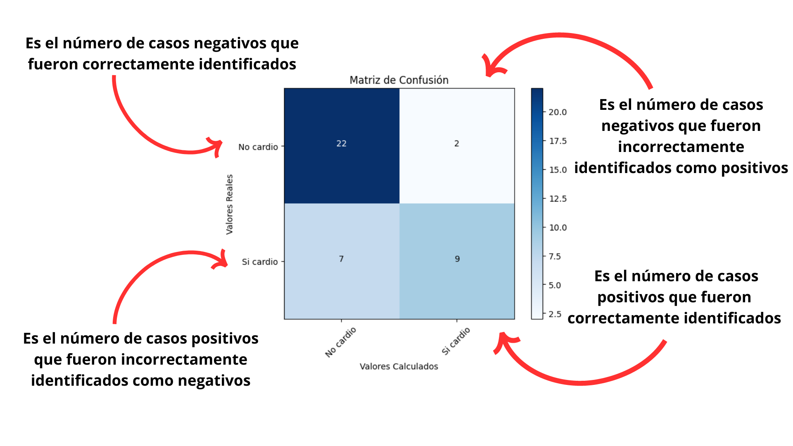
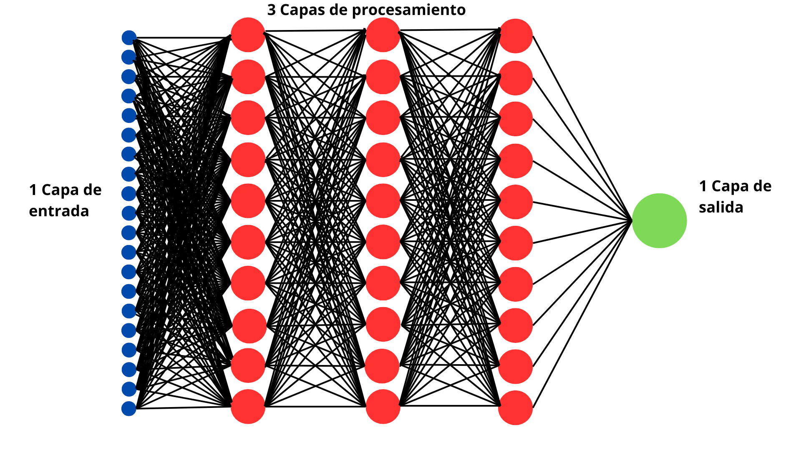

Algortimo de IA que puede detectar si una persona sufre o no una enfermedad Cardiaca
La cracion de este algortimo de IA hecho con redes neuronales en el lenguaje de programacion de Python, el cual fue entrenado con 200 datos de personas sobre su estado de salud en la parte Cardiaca pudo saber y detectar que personas si y que personas no sufrieron un ataque cardiaco o una enfermedad Cardiaca con un maximo de 60% a 95% probabilidad de acierto.

En esta tabla de Matriz de confusión se representa las predicciones que hizo el algortimo
Representacion grafica de la red neuronal con la que hice el Algortimo
Le vi muchas expectativas y se que puedo hacerlo mejorar mucho mas su precision de acierto con un conjunto de datos mayor y con una configuracion de mas o menos capas de redes neuronales.